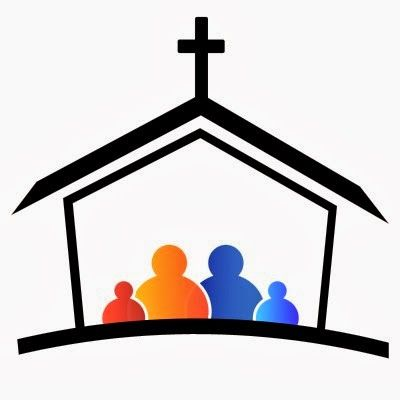

Gran Misión Evangelizadora
La Iglesia se encuentra ante un deber ineludible: evangelizar. La predicación del Evangelio, la Fe y el Bautismo están de tal manera entrelazados que no se pueden separar. Sin predicación, no hay fe; sin fe no hay bautismo; sin bautismo no hay salvación.
Misión Permanente
La misión de la Iglesia es proclamar la Buena Nueva de Jesucristo, enseñar la fe, celebrar los sacramentos y servir a los necesitados. La Iglesia también trabaja para promover la justicia social, defender la dignidad humana y proteger el medio ambiente.
Escuela dominical

La niñez es una prioridad dentro de la formación del ser humano. Es la etapa de la vida que constituye una ocasión maravillosa para la transmisión de la fe y los valores. Es urgente y necesario guiar, acompañar, educar y formar a los niños y niñas en su desarrollo Humano-Cristiano.
Visita a los enfermos

Es un sacramento que se administra a los enfermos y a los moribundos. Es un sacramento de curación y de fortaleza espiritual.